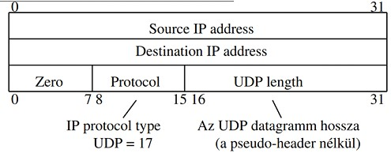

4.1.
A) Melyik NAT-típus használata a legtipikusabb otthoni környezetben?
dinamikus NAT
B) Mi a fő előnye a túlterheléses NAT alkalmazásának a klasszikus NAT-megoldásokkal szemben?
A legtöbb esetben az útválasztónak egy nyilvános IP-címe van hozzárendelve, ám a hálózat minden eszköze valószínűleg internet hozzáférést igényel. A NAT túlterhelés segítségével az útválasztó kapcsolatot létesít a nyilvános IP-címe és a szerver között. Ezután elküldi a csomagokat a szervernek, de hozzá is rendel egy visszatérési célportot.
Ez segítséget nyújt abban, hogy megtudja, mely csomagoknak szól a privát hálózat IP-címe. Véletlenszerűen ez a folyamat PAT része.
4.2.
A) Az „Oracle VirtualBox konfiguráció 1” esetén melyik berendezés végzi a címcsere funkciót?
NAT
B) A VM1 gépről küldött IP csomag esetén hányszor cserélődik a cím LAN, MAN, WAN szinten, ha a csomag az Internetbe jut el?
Lan szinten egyszer sem, MAN szinten 2-szer és WAN szinten egyszer.
4.3.
A) Milyen IP csomagazonosítóval kezdődik egy TCP kapcsolat felépítése?
forrás portszám és célportszám
B) Milyen IP csomagazonosítóval kezdődik egy UDP alapú forgalom?
forrás portszám és célportszám
4.4.
A) Hogyan lehetséges előállítani 40 bájtnál hosszabb fejrészű TCP szegmenst?
A tpc fejléc minimálisan 20 bájt, maximálisan 60 bájt.
Ha a fejléc hossza mező 10-es decimális értéket tartalmaz (ez 1010), akkor:
Fejléc hossza = 10 x 4 = 40 bájt
B) Melyik mezők tartoznak egy UDP szegmens pszeudó fejrészéhez?
